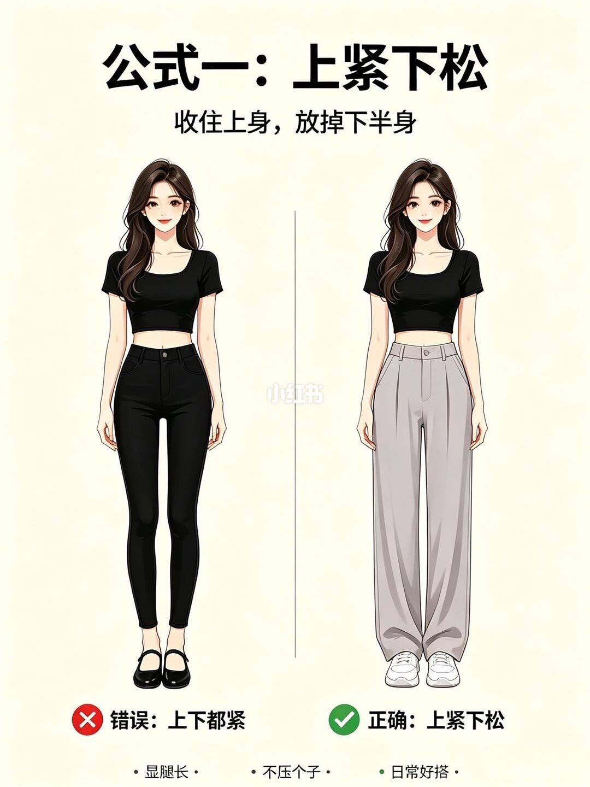
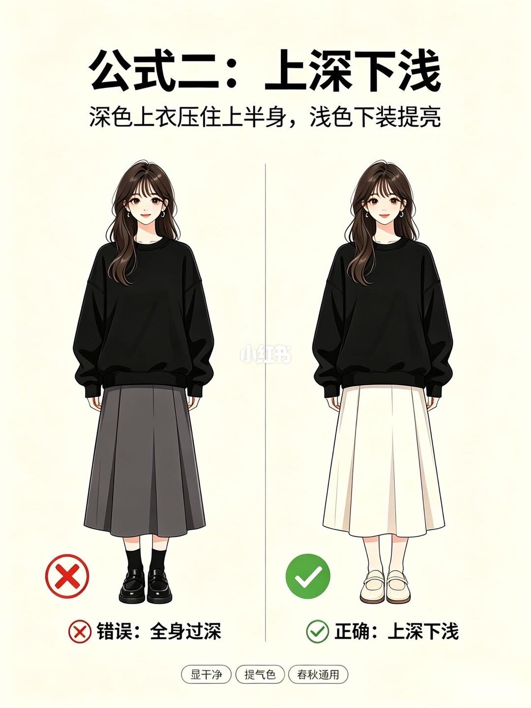
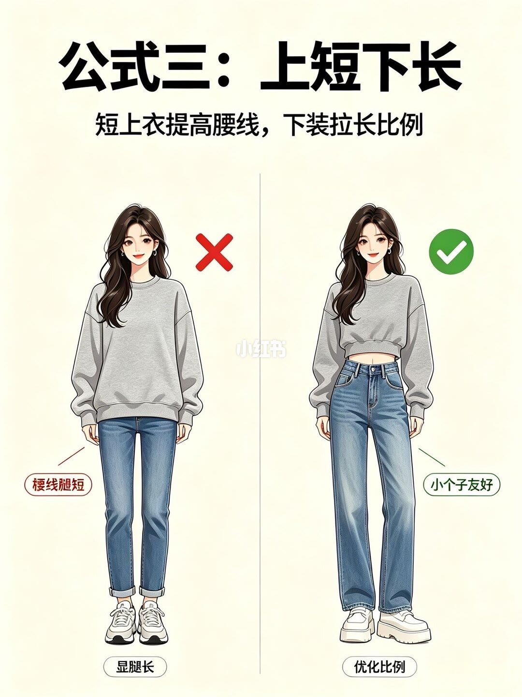
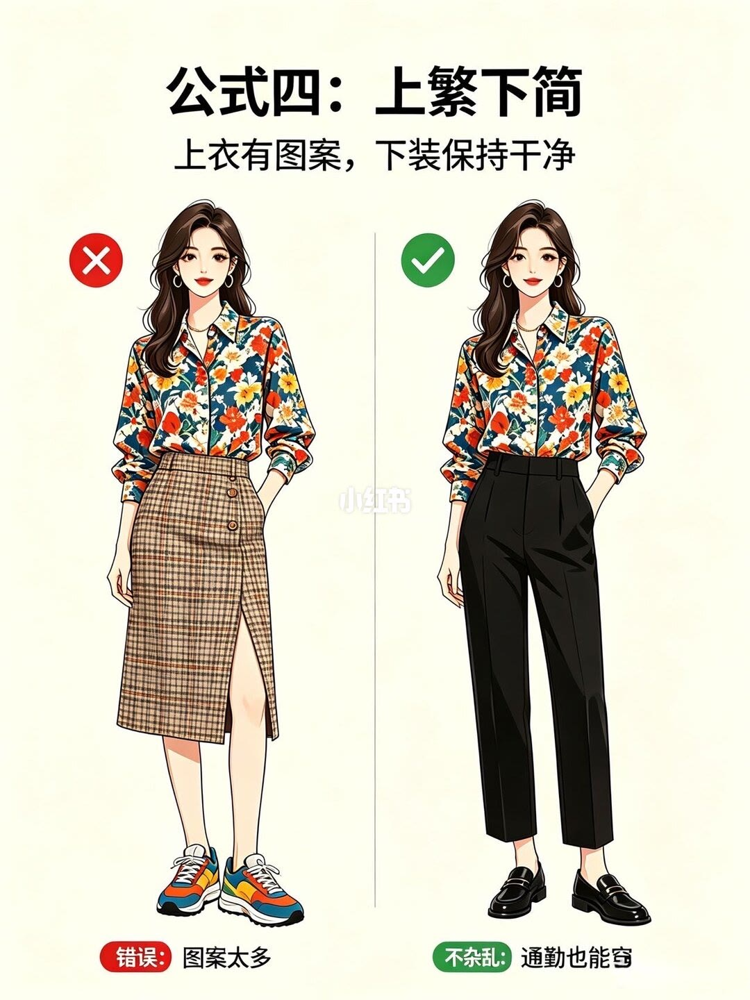

图文实录 · 小红书 · 袁姐形象美学
女明星同款梨形穿搭逻辑，再也不用乱买衣服
四页各给一条对错：上紧下松、上深下浅、上短下长、上繁下简。图上没有量臀腰，也没有写出哪一条专属梨形。
1/4
公式一：上紧下松
副题「收住上身，放掉下半身」。同一件黑色短袖露腰上衣。左边打叉：紧身黑裤和平底玛丽珍，标成「错误：上下都紧」。右边打勾：高腰阔腿灰裤和厚底白鞋，标成「正确：上紧下松」。底下三条好处：显腿长、不压个子、日常好搭。

2/4
公式二：上深下浅
副题「深色上衣压住上半身，浅色下装提亮」。左边打叉：黑卫衣、深灰百褶裙、黑袜黑鞋，标成「错误：全身过深」。右边打勾：同一件黑卫衣换成米白百褶裙和白鞋，标成「正确：上深下浅」。好处三条：显干净、提气色、春秋通用。

3/4
公式三：上短下长
副题「短上衣提高腰线，下装拉长比例」。左边打叉：长到大腿的灰卫衣配收口牛仔裤，气泡写「腰线腿短」，底下「显腿短」。右边打勾：同一件卫衣改成短款，配高腰阔腿牛仔裤和厚底鞋，气泡写「小个子友好」，底下「优化比例」。

4/4
公式四：上繁下简
副题「上衣有图案，下装保持干净」。左边打叉：花衬衫配格子裙和彩色运动鞋，标成「错误：图案太多」。右边打勾：同一件花衬衫配纯黑长裤和黑乐福鞋，标成「不杂乱：通勤也能穿」。

汇总
四条都是插画对错，不是体型测量
笔记标题写的是梨形。这四页本身只标了上紧下松、上深下浅、上短下长、上繁下简，每页都是同一人换下装或换长度。没有臀腰尺寸，也没有女明星的照片。把它当成买衣服时的四条检查，不要当成体型诊断。